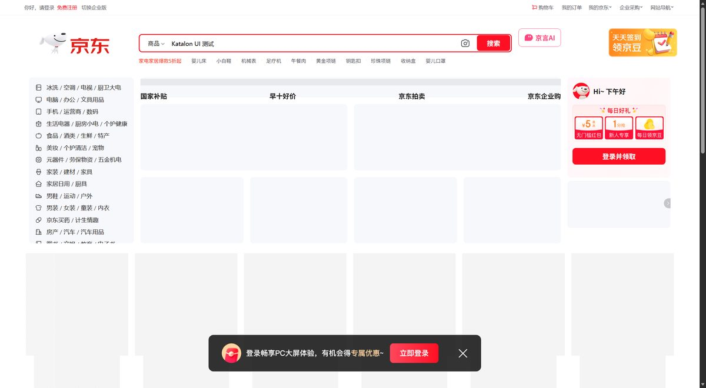
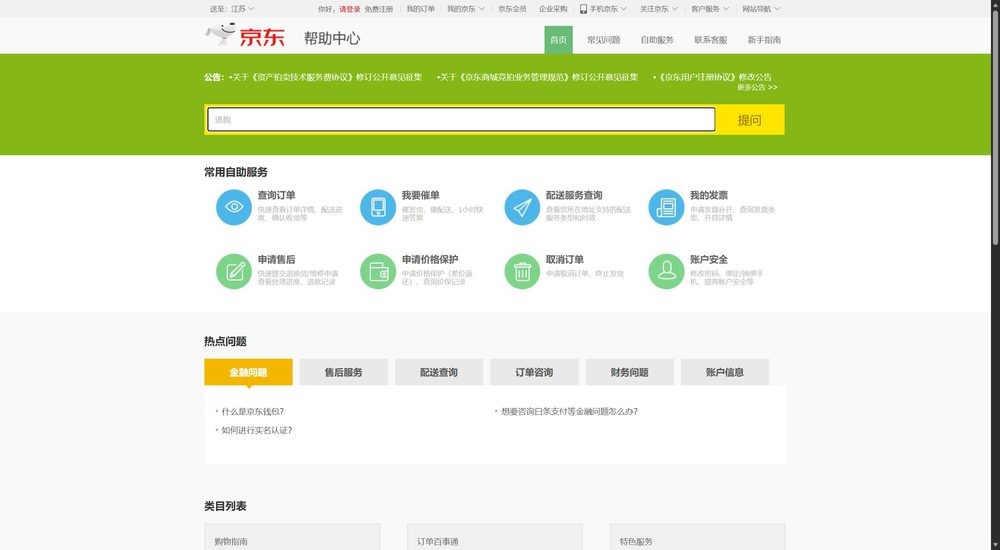
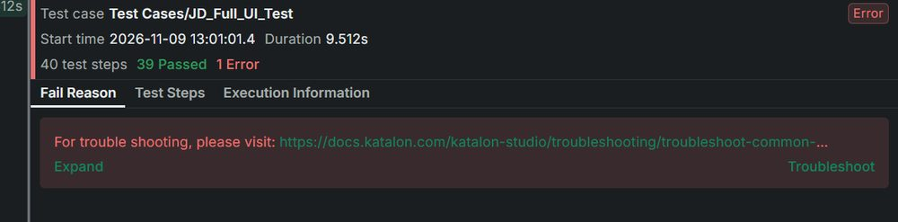

🔍 断言分组查询器
选择 A–F 任一分组或查看全部，立即列出该组的断言数量、检查内容与逐条断言明细（示例条目，完整明细见原始报告 01_result.txt）。
硬断言
75条
PASS 75 / FAIL 0
通过率
100%
verdict PASS
信息记录项
23条
只采集、不判失败
正式运行
4次
3 次失败 + 1 次通过验收
测试设计
覆盖环境、首页、登录页、帮助中心、受限页面与证据留痕六个维度
| 分组 | 断言 | 信息 | 测试内容 |
|---|---|---|---|
| A 环境 | 7 | 0 | Edge 启动、指纹伪装、版本、会话、Cookie、视口 |
| B 首页 | 31 | 11 | URL / 标题 / 完整渲染 / 风控层、导航、搜索框、Logo、图片链接、控制台、性能、响应式 |
| C 登录页 | 17 | 2 | 表单、扫码 / 密码 / 短信三种方式、第三方入口、页脚 |
| D 帮助中心 | 11 | 2 | 导航、帮助搜索框可输入、链接与图片统计 |
| E 受限页面 | 9 | 4 | 登录跳转落地页 5 项 + 商品频控落地页 4 项 |
| F 证据 | 0 | 4 | 3 张截图与原始日志的留痕记录 |
| 合计 | 75 | 23 | 初版 66 项，修复 B06 时补齐 E 组 9 项后为 75 项 |
各分组断言数量
B 组首页占比最高（31 条，41%）
执行时间线
失败不是重试碰运气：两次修复都有可复核的证据
10:48 百度冒烟验证整条链路，Passed，确认环境可用
12:15 5 页面独立探测，建立 JD_Full_UI_Test，确定可测边界与风控应对
12:43:56 第 1 次正式运行：65/66 FAIL，仅 B06 失败
12:43:58 第 2 次正式运行：结果一致，稳定复现
12:55 第一次修复（v2）：B06 改判可视区域，补 E 组 9 条断言
13:01:02 第 3 次正式运行：Error，仅跑 14 项（Groovy 动态类型错误）
13:06 第二次修复（v2.1）+ 独立完整预跑：75/75 PASS、30 秒零异常
13:08:47 第 4 次正式运行（验收）：75/75 PASS、100%
| # | 根因 | 修复 |
|---|---|---|
| 1 | 京东首页 DOM 常驻离屏兜底层（距视口顶部约 2,388 px），旧脚本用整页 innerText 全局搜“当前页面异常”，把看不见的模板也算进去 → 误报 | 新增“文案是否落在可视区域”判定，B06 只判可见降级层；E 组升级为 9 条断言 |
| 2 | 说明行写成“布尔值 + 字符串”，Groovy 没有布尔值加法，运行时抛异常记为 FATAL；语法检查抓不到动态类型错误 | 拼接前统一 String.valueOf(...) 转字符串；增加“脱离 Katalon 的完整预跑”作为运行前验证 |
预探测的价值：京东会识别自动化浏览器。不伪装时首页只返回风控降级页「当前页面异常」，可见文本约 105 字、没有搜索框。
先探测、再写用例，才避免了把风控页当成功能缺陷。
执行取证
脚本自起浏览器、自建结果文件夹；每次运行产出明细、HTML 报告、页面截图、原始日志与检查清单



Katalon Studio 实测评价
- 优点：GUI 点 Run 即运行；自带 JRE/Groovy/Selenium/驱动；日志逐步追踪详细；报告体系完整；Groovy 可自由封装断言
- 不足：默认浏览器配置名是 Chrome，本机只有 Edge 时易误导；内置驱动版本滞后；单用例报告落系统临时目录；动态类型错误运行前抓不到
测试结论
- 环境、驱动、结果归档与全量用例全部跑通并可复用，后续再测直接点 Run，不用重新配置
- 两次修复均定位到明确根因（离屏 DOM 误报、动态类型拼接崩溃），并有截屏与预跑数据可复核
- 局限：75/75 说明“这些检查点在当时通过”，不等于网站没有缺陷；未覆盖真实登录、搜索提交、下单支付，搜索跳登录与商品 403 属站点限流